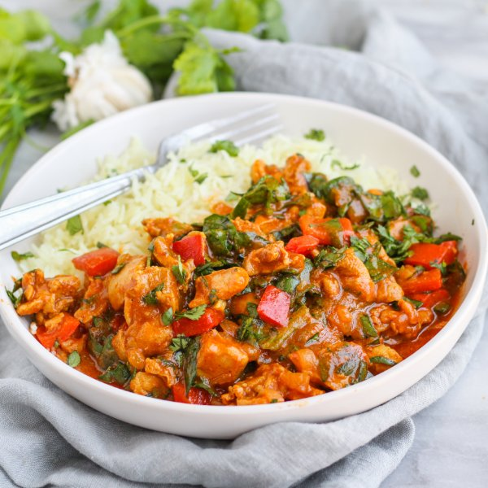

Spiced Pakistani-Style Chicken Curry with Bell Pepper, Spinach & Rice

Nutrition (per serving)
634.3 kcalCalories
56.1 gProtein
61.8 gCarbs
18.6 gFat
Full nutrition table
| Calories | 634.3 kcal |
| Total fat | 18.6 g |
| Saturated fat | 3.9 g |
| Trans fat | 0.1 g |
| Cholesterol | 213.2 mg |
| Sodium | 341.1 mg |
| Carbohydrates | 61.8 g |
| Fiber | 7.7 g |
| Sugars | 10.2 g |
| Protein | 56.1 g |
| Potassium | 1808.2 mg |
| Calcium | 166.3 mg |
| Iron | 8.7 mg |
| Vitamin A | 557.6 IU |
| Vitamin C | 121.1 mg |
| Vitamin D | 2.3 IU |
Cookware
Ingredients
- 2 (5 oz) pkgsbaby spinach
- 1 cupbasmati rice
- 16 fl ozchicken or vegetable broth
- 2 lbchicken thighs, boneless skinless
- 1 small bunchcilantro
- 4 clovesgarlic
- 2 (1 inch) piecesginger root
- 2limes
- 2red bell peppers
- 2 (8 oz) canstomato sauce
- 2 mediumyellow onions
- black pepper
- chili powder
- cinnamon, ground
- coriander, ground
- cumin, ground
- extra virgin olive oil
- paprika
- salt
- turmeric, ground
Steps
- Using a strainer or colander, rinse the rice under cold, running water, then drain and transfer to a medium saucepan. Add broth and bring the mixture to a boil over high heat.1 cup basmati rice
16 fl oz (2 cups) chicken or vegetable broth - Meanwhile, wash and dry the fresh produce. (Skip the spinach if it came pre-washed.)2 limes
2 (1 inch) pieces ginger root
2 red bell peppers
1 small bunch cilantro
2 (5 oz) pkgs baby spinach - Once the liquid comes to a boil, stir the mixture, cover the saucepan, and reduce heat to low. Cook rice until liquid is fully absorbed, 15-18 minutes. Once done, remove rice from the heat and let it stand, still covered, for 5 minutes.
- While the rice cooks, juice the limes into a large bowl. Add spices and stir to combine the marinade.2 tsp paprika
1 tsp salt
½ tsp chili powder
½ tsp turmeric, ground
½ tsp coriander, ground
½ tsp cumin, ground
¼ tsp black pepper
⅛ tsp cinnamon, ground - Pat the chicken dry with paper towels and cut into bite-size pieces. Add to the bowl with the marinade and stir to combine; set aside.2 lb chicken thighs, boneless skinless
- Using a clean cutting board, peel and mince ginger and garlic.4 cloves garlic
- Preheat a large skillet over medium heat.
- While the skillet heats up, peel and small dice onions.2 medium yellow onions
- Once the skillet is hot, add oil and swirl to coat the bottom. Add ginger, garlic, and onion; cook, stirring often, until onion is soft, 3-4 minutes.2 tbsp extra virgin olive oil
- Add chicken to the skillet and cook, stirring occasionally, until partially cooked through, 4-5 minutes.
- Meanwhile, trim, seed, and medium dice bell peppers.
- Add bell peppers, tomato sauce, and water to the skillet. Stir to combine and bring to a boil over high. Once boiling, reduce heat to medium-low; simmer, stirring occasionally, until chicken is cooked through, 15-18 minutes.2 (8 oz) cans tomato sauce
½ cup water - Meanwhile, shave cilantro leaves off the stems; discard stems and mince the leaves.
- When the chicken is done, remove from heat. Stir handfuls of spinach into the skillet, waiting for the spinach to wilt slightly before adding the next handful. Add half the cilantro (reserving the rest for garnish) and stir to combine.
- To serve, divide rice and chicken curry between bowls. Top with reserved cilantro and enjoy!